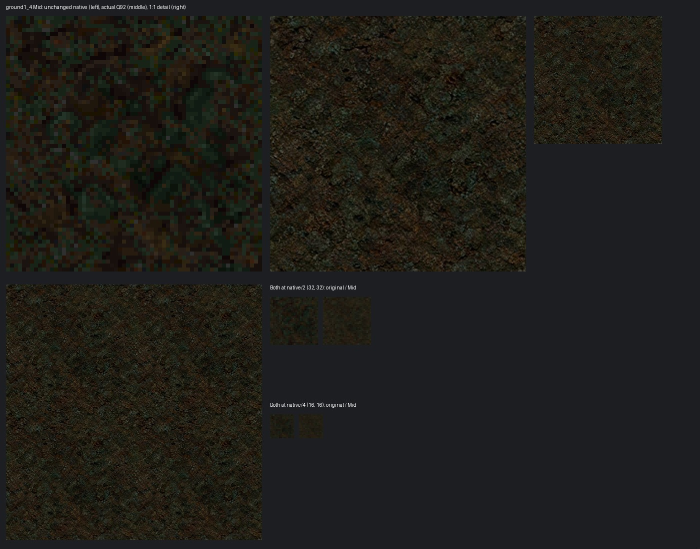
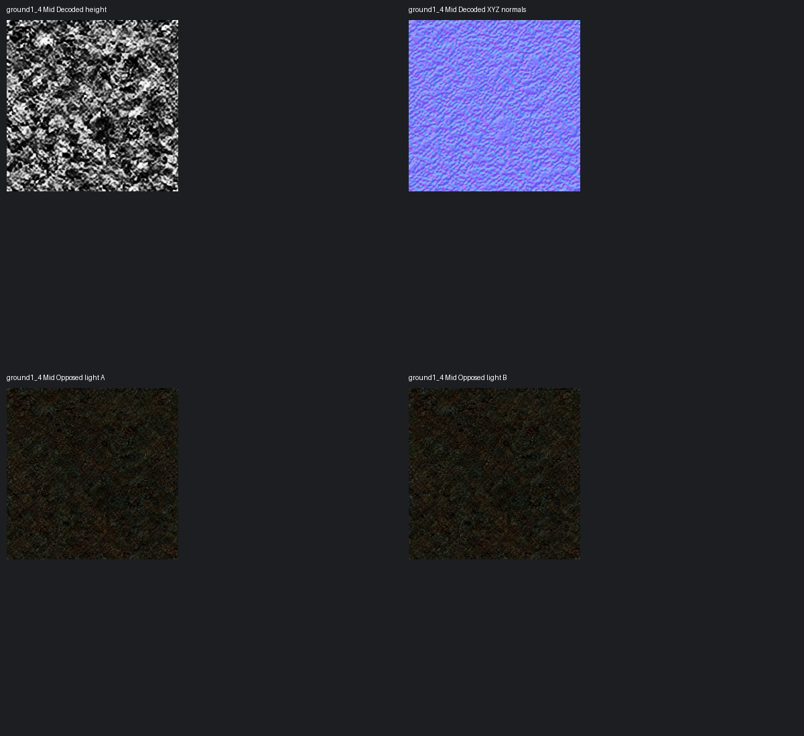
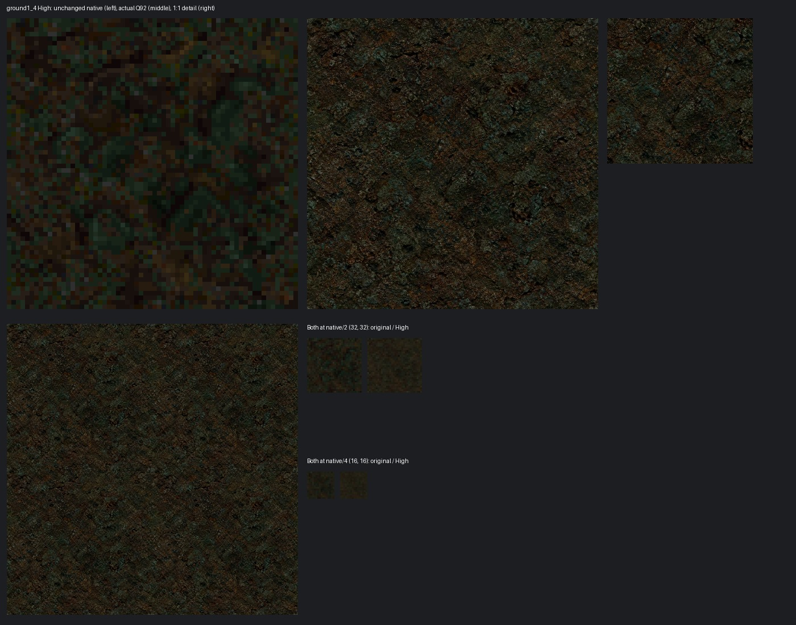
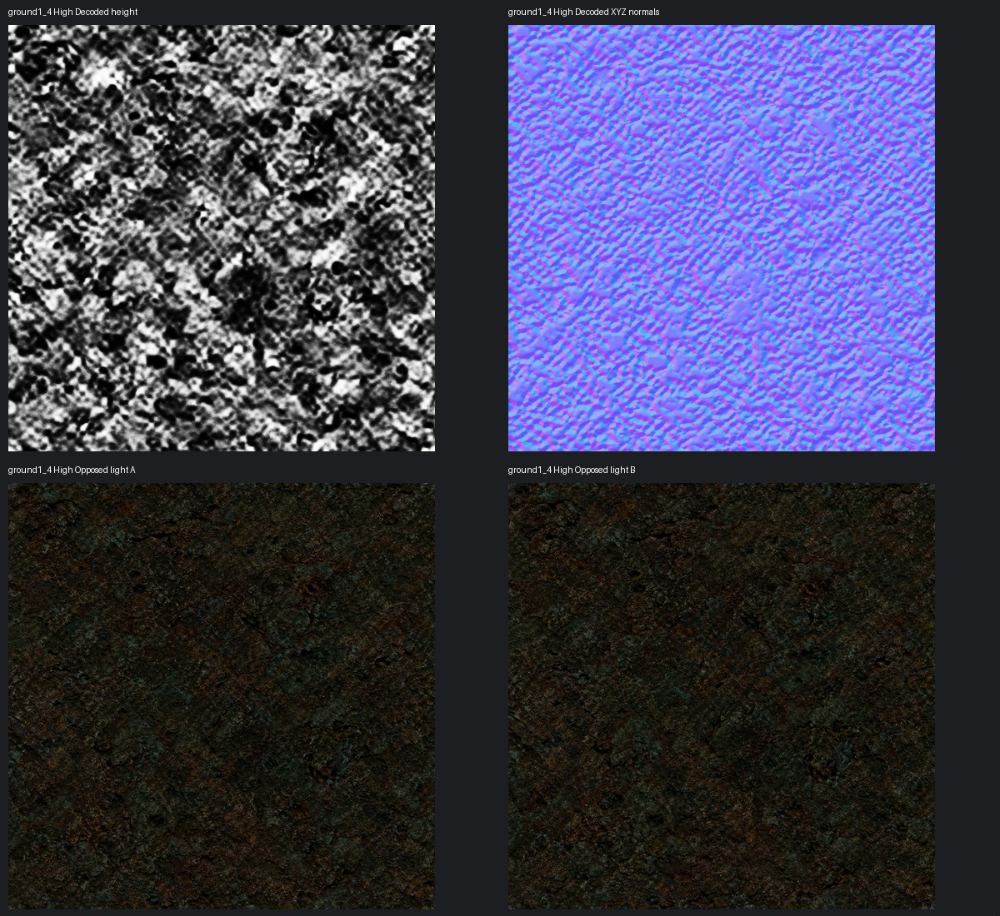

Low is unchanged. Colour is lossy WebP Q92/method6; height and XYZ normals are lossless WebP/method6 with exact exported8-bit channels. Float quantization is distinct from compression. Both tiers come directly from one retained master. Offline review, not game integration or owner acceptance.



